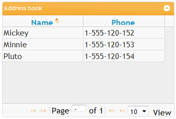
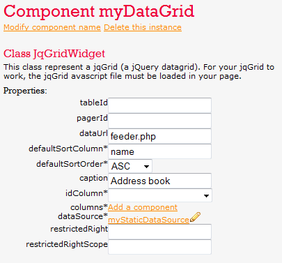
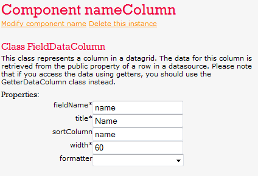
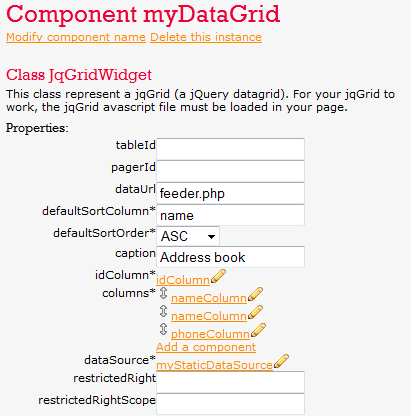

The JqGridWidget class is a datagrid that uses the jqGrid widget (a javascript datagrid that uses the jQuery framework). Therefore, to use it, you will need to be sure that jQuery, the jQuery-ui plugin and the jqGrid plugin are loaded.
The JqGridWidget class is part of the html/widgets/jqGridWidget package.
The typical look of a grid is shown below:
The jqGrid features Ajax paging and sorting, but does not feature a row expander.
Let's have a quick look at the jqGrid widget when we create one inside Mouf:
First, a datagrid needs a datasource. In this exemple, the datasource property is bound to a "myStaticDataSource" instance that points to a StaticDataSource (see the static datasource documentation for more information).
The jqGrid is an Ajax enabled grid. This means that the displayed data is retrieved from the PHP server via a separate request that will return the data in a XML formatted string. The dataUrl property contains the URL that will send back the data as XML.
The tableId and pagerId are used to set the ID of the <table> element that will host the table, and of the <div> element that will host the pager.
The caption property can be used to set the caption of the grid.
Then, we must define the columns displayed in the grid.
The columns are part of the columns property. There is one special column: the idColumn. This column is always hidden, and must contain a unique identifier for the row.
Columns are represented by classes extending the DataColumnInterface interface. The Mouf team provides to implementations
for this interface:
This might not be very clear so let's see an exemple. I want to retrieve the data from the "myStaticDataSource" instance. I know that this is an instance from the StaticDataSource class. In the static datasource, I access data using public properties of objects. For instance, I can access data with this code:
echo $staticDs[0]->name;
Therefore, I must use the FieldDataColumn class. If data was accessed using a getter, I would have used the GetterDataColumn.
Let's create this column now in Mouf, and let's bind it to the datagrid:
This column contains a number of properties:
$staticDs[0]->name to access that data, the name of the field is "name".In this exemple, we only want to display some text in the "name" column. Therefore, we won't use any formatter. However, there exist a number of formatters that can be used to render the text: as a checkbox, as a date, with an embedded link, etc...
At the end of the process, the datagrid will look like this:
Our datagrid is configured, let's display it.
This exemple will contain 2 files. The main file "index.php", will be used to display the grid. The second file "feeder.php" will be used to send data via Ajax.
Since we are using a StaticDataSource, the "feeder.php" file will also fill the source with some sample data.
Index.php:
<?php require 'Mouf.php'; ?> <?php // Display the data grid. Mouf::getMyDataGrid()->toHtml(); ?>
Of course, in your application, the jQuery libraries will certainly be loaded in another way, for instance by direct injection in the template (see wa href="http://www.thecodingmachine.com/ext/mouf/doc/components.html">this tutorial).
Now, we must provide some code to get the data and return it in XML format. Hopefully, the datagrid will take care of generating the XML message. All we need to do is provide the datagrid with the right data, and the right parameters.
<?php
require 'Mouf.php';
$staticDs = Mouf::getMyStaticDataSource();
$staticDs->addRecordFromArray(array("id"=>1, "name"=>"Mickey", "phone"=>"1-555-120-152"));
$staticDs->addRecordFromArray(array("id"=>2, "name"=>"Minnie", "phone"=>"1-555-120-153"));
$staticDs->addRecordFromArray(array("id"=>3, "name"=>"Pluto", "phone"=>"1-555-120-154"));
Mouf::getMyDataGrid()->printXmlData($_REQUEST['page'], $_REQUEST['rows'], $_REQUEST['sidx'], $_REQUEST['sord']);
?>
The printXmlData method prints the XML data contained in the datasource. The printXmlData method expects 4 parameters:
Those parameters (related to the number of fields to be displayed and to the sort order) are present in the request. We just have to forward it.
Finally, we can see the result. By browsing to the index.html page, we will see this: